老城区校门口拥堵难题如何“破”？
来源：北京东城
近日，北京市教委发布《中小学校周边交通综合治理工作方案》。方案明确，鼓励有条件的学校要根据本校实际，结合下午三点半课后活动安排，实行错峰上下学制度，安排学生分学段、分班级错峰上下学，分散化解学生集中入校离校压力，减轻上下学高峰期间家长接送学生造成的交通拥堵状况。
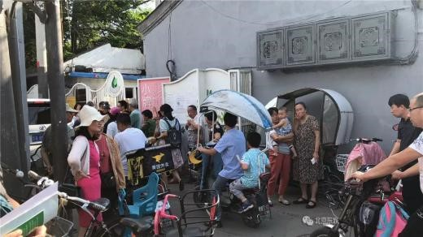放学期间，小牌坊胡同内行人、车辆寸步难行。
因家长接送孩子而造成的校园周边交通拥堵现象，在各地普遍存在，而且在一些地方成为城市交通管理的通病，长期难以解决。东城区地处首都核心区，老城内的街巷胡同道路狭窄，部分身处其中的学校往往会在上下学时段遭遇“短时拥堵”。据区交通委介绍，北京站西街周边有新开路小学（后沟胡同125中学周转校）、汇文实验中学、东交民巷小学，所在的胡同都不是很宽，平时不会出现拥堵，只有在放学时会出现短时间拥堵。
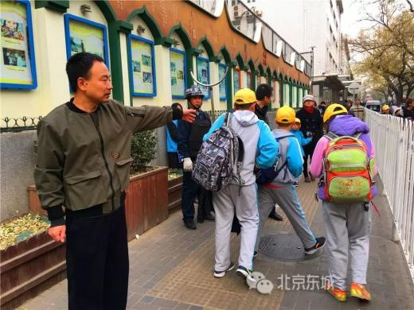方案发布后，记者走访东城区多所遭遇“短时拥堵”的学校、幼儿园，发现它们的应对，不仅有学校加强校内管理和校门口疏导，而且学校周边的社区、志愿者也纷纷加入，参与疏导应对。
位于柳罐胡同的北京市汇文第一小学采取了错时间、错地点、错年级、错校门的“四错”方式，引导学生和家长们有序上下学。该学校德育主任钱程说：“我们要求老师和家长手递手接送学生，确保每一名学生安全交接。”
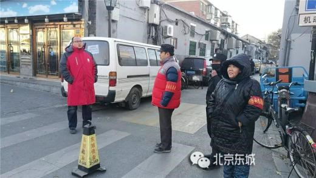东四十四条小学除采取分年级错峰放学的方式缓解交通压力外，还在学校门口安排了2名女干部值守，1名男干部带领3名保安在胡同内指挥交通、疏导车辆、排解矛盾。当发生交通堵塞时，干部会用感谢的手势或语言示意司机暂时停止移动，快速疏导人流，然后指引车辆安全驶离，整个过程一般不超过5分钟。
和平里第三小学则联合学生家长委员会共同成立了“护蕊”志愿服务队，每天7点15分至7点50分，家长志愿者们就出现在校门口，手持“让”字牌，与值班教师、交通协管员一起，帮助上学过马路的同学拦住过往车辆，护送学生通过马路。
说法 区交通委：
校园周边交通问题需共同治理
据区交通委相关负责人表示，校园周边交通问题需要当地的交通参与者、管理者共同协商，共同治理。
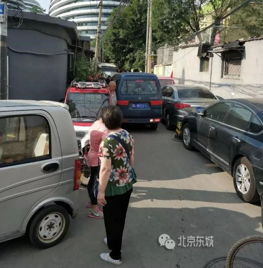该负责人称，建议学校作为交通参与者，结合学生放学回家方向，与街道、交通委共同规划设计胡同内放学疏散路线。如果周边确无其他放学疏散路线，必须选择单一路线且会导致拥堵的，学校应通过社区取得周边居民和单位的理解。同时，建议学校考虑胡同道路狭窄、交通承载力有限的实际，尽量错峰放学，按不同放学方向组织放学队伍，并减少胡同内家长接送、等候，以降低拥堵程度、缩短拥堵时间。
他同时建议，街道组织学校与该胡同的居民、单位、作业部门协商，达成共识，形成高峰时段的通行互让协议，敦促各方执行，并通过网格员、平房区物业服务单位在每日放学期间在胡同口周边进行现场交通提示。
该负责人表示，交通委将会同街道治理胡同内机动车、非机动车停车秩序，并会同教育主管部门、学校、街道共同规划拥堵路段的放学疏散路线（可以由学校组织有兴趣的同学共同参与），评估临时限行的措施和时间，组织统一印制临时提示牌（包括临时限行）。
定位1 小牌坊胡同
交通劝导队解决胡同水泄不通
下午4点半，气温已到零下，朝阳门街道大方家社区交通劝导队74岁的队员孔慧忱准时在大方家胡同8号门前，进行交通劝导。
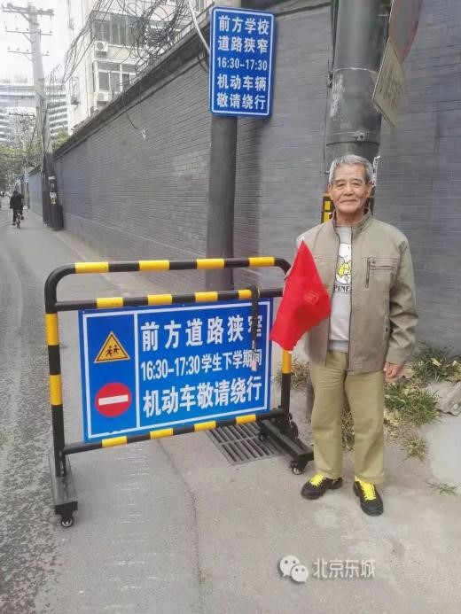下午4点半到5点半，是小牌坊胡同内两个幼儿园的放学时间，交通劝导队的队员们会在小牌坊胡同口和大方家胡同口设立两个点位，劝导机动车绕行。
天儿冷不怕，为的是咱们胡同里不再那么拥堵，也为了能让孩子们放学安全点儿。”孔慧忱说。
多方合力出谋划策
“我们这胡同以前特别堵，像我们这些沿街的人家，有时连门都开不了。”提起小牌坊胡同曾经的拥堵，居民苦不堪言。小牌坊胡同和邻近的南水关胡同内，共有两家幼儿园，一到放学时间，学生和家长，外加许多过路机动车、接孩子的老年代步车、外卖员等各种行人和车辆把仅4米宽的小牌坊胡同堵得水泄不通。
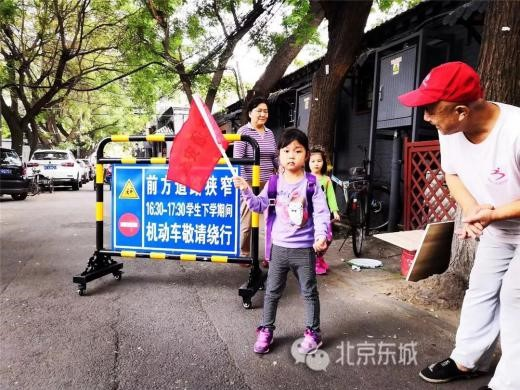今年7月，大方家社区的社区专员龚新宇接到居民反映后，实地调查发现两家幼儿园共500余学生，且放学时间相同，小牌坊胡同是必经之路，每到放学时间，胡同里便人数骤增，加之胡同是双向行驶，更加剧了拥堵。
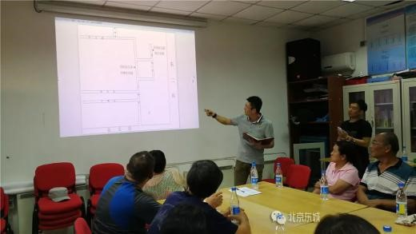龚新宇立刻组织胡同居民代表、园方负责人、平房物业，召开了居民代表会，共同商讨幼儿园放学时段周边交通拥堵问题。会上，龚新宇引导居民一起分析拥堵问题，并提出解决方案。经过征询交通部门专业意见后，最终决定由居民志愿者和胡同物业共同组成交通劝导队，在幼儿园放学时段对行经小牌坊胡同的机动车进行疏导分流。
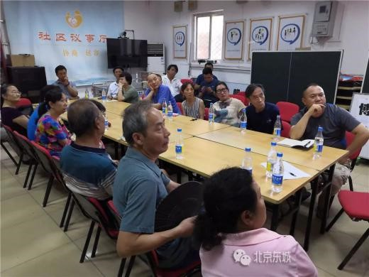同时，由幼儿园方面发放《致家长的一封信》，倡导家长减少三轮车、老年代步车的使用频率，并自觉将车辆有序停放至指定区域。此外，社区还在主要交叉路口设置道路指示牌，提示行经车辆绕行时间。
劝导队上岗见成效
9月学生开学，交通劝导队队员同时上岗。下午4点半到5点半放学期间，队员们和物业保安人员在大方家胡同和小牌坊胡同口，共设置两个劝导点位，劝导机动车绕行。
交通劝导队一上岗就立竿见影，如今放学时间的小牌坊胡同里，再也不见了各色车辆和行人在胡同里寸步难行，取而代之的是家长牵着孩子的手，放心走在胡同里的身影。
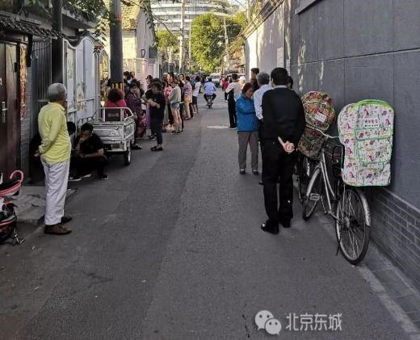队员张伟告诉记者，交通劝导队上岗3个月来，由刚开始的一个小时内劝导二十几辆车，到现在减少到四五辆车，队员也从10名扩展到20名。“我们都是自愿加入的，孩子们现在能安安全全从胡同里出来，家长们也冲我们竖大拇指，我们都觉得特别欣慰。”他说。
定位2 东四七条
网格员联手物业疏导车辆
下午3点半，东四七条社区网格员郝赫赶到东四七条胡同东口，和在这里值班的物业人员韩立根会合。在他来之前，韩立根已经将阻车用的锥桶立在胡同口中央。不一会儿，一辆黑色的小轿车拐进胡同，郝赫上前：“师傅，胡同里面的小学正在放学，孩子和家长很多，您能绕行或者等一会儿再进去吗？”司机犹豫了一下，同意了。
这时，家长带着孩子陆续从胡同走出来。“过去放学的时候，老有车开进来，车往东走，孩子们往西出，大家堆在一起，谁也走不动，而且还很危险。”张大妈的孙子在东四七条小学上4年级，过去4年，张大妈每天下午3点半接孩子放学，“自从有人帮忙疏导车辆后，情况好多了，我挺感谢他们的。”
东四七条小学所在的东四七条胡同宽约5米，一侧停满了机动车，剩下的道路刚好够一辆车通行。目前，胡同实行单向行车政策，平时不会拥堵，但是如果放学时有机动车开进来，则变得拥堵不堪。
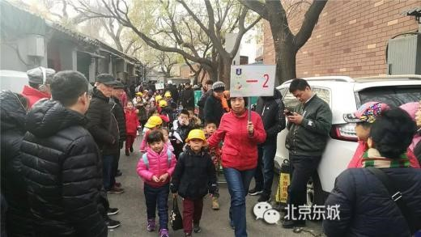看到这种情况，网格员郝赫心里很着急。他找到胡同东口的物业人员韩立根，商量能否联合起来疏导车辆，韩立根爽快地答应了。
一个多月来，每天下午3点30分到3点50分，郝赫和韩立根都在东四七条胡同东口疏导车辆，“司机基本都很配合。”郝赫告诉记者，时间长了，胡同里居民和单位的车辆都会主动避让这一时段。
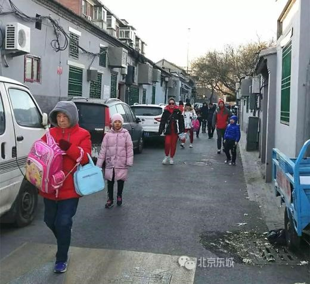郝赫和韩立根的同事有空时也来帮忙，有时在校门口帮助老师维持秩序，有时和郝赫一起劝导司机。在东四七条社区的支持下，东四七条胡同守望岗值班人员正式加入疏导队伍。
维护校门口的交通秩序，各方都在“向前一步”。东四七条小学有6个年级，每个年级2至3个班。放学时，学校采取错地点、错年级的方式，1班和2班在校门东侧解散，3班在西侧解散，先低年级后高年级。李女士家住在学校西侧，但是接孩子的地点在东侧，为了不造成拥堵，李女士每次都和孩子一起从东侧绕远回家。“校门口的交通需要大家共同努力。”李女士说。
定位3 东花市大街和北花市大街交叉路口
疏导岗让接孩子不再“揪心”
“同学们，排好队，不要拥挤，注意脚下，往这边走。”下午3点半，下课铃声响起，回民实验小学的同学们在操场集合。同学们头戴小黄帽，排好队，在老师带领下从学校南门走出。在学校南门东西两侧20米处，分别设有两个疏导岗，保安、教师和家长志愿者正在引导学生有序通行，劝导家长在疏导岗设置的警戒线外耐心等候。
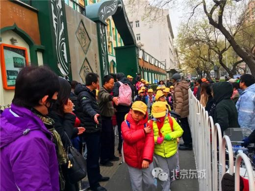回民实验小学地处东花市大街和北花市大街交叉路口，学校面向两条大街分别开设了南门和西门。记者在学校门前看到，该十字路口车流量非常大，离学校门口仅两米的距离便是非机动车道，车辆川流不息，学生的安全难以保障。
“2016年以前接孩子，全靠挤。一到放学时间，家长们一窝蜂地全堵在学校门口，看到孩子只能靠喊，孩子听到我叫他，在人群中找半天才能看见我。更别提那些开车来接孩子的了，半个小时车都动不了。”傅先生的孩子在回民实验小学上六年级，从孩子上一年级起，傅先生就揪着一颗心，每天为孩子上下学的安全问题担心。
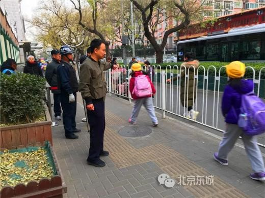2016年，学校在南门前设置了两处疏导岗，每日上下学高峰，4名教师、2名保安分为两组，分别在两个疏导岗进行值守，疏导学校门口的交通秩序，引导学生及家长有序排队接送学生。学校保卫干部赵震宇说：“学校的西门主要用于教职工车辆出入，南门供学生出入使用。每天上午7点20分到7点50分，下午3点半和5点半，我们都会准时到岗疏导。”
此外，为进一步缓解上下学高峰时期校门口的交通压力，学校还采取了分年级错峰放学的方式。
傅先生说：“有了疏导岗，学生安全有了保障，家长接送孩子也自觉排队，变得有序了，我们心里踏实多了。”傅先生作为学校家委会的成员，还和其他几位家长们一起自发成立了志愿服务岗，每日由两名家长在放学高峰期引导大家有序通行。“我们希望和学校一起为孩子们的安全保驾护航。”他说。